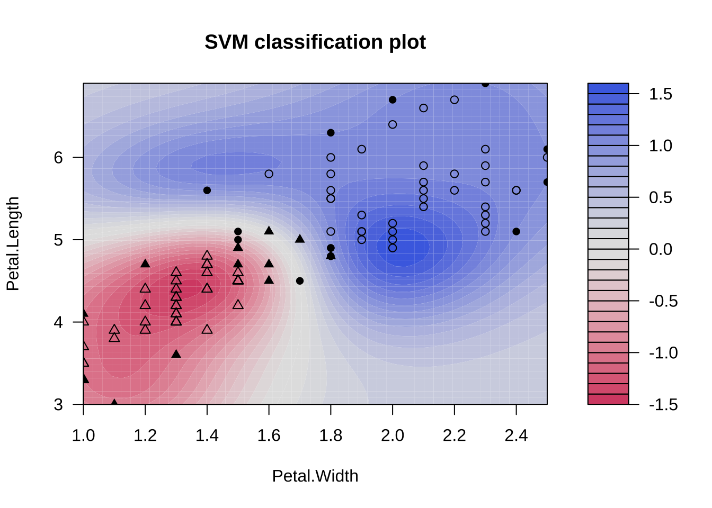

10 サポートベクターマシン (SVM)
サポートベクターマシン (SVM) は, 説明変数の空間を分割する決定境界を データより直接推定するアプローチである識別モデル (discriminative model) と呼ばれる クラス分類問題解決手法の一つである.
SVMは, 原理的には, 2クラス分類問題に対して適用される. 他クラス分類問題に対しては, 複数の2クラス問題に分割し, 各々にSVMを適合して得られた個々の分類結果を統合する形で解決を図る.
SVMは, 多次元の説明変数の空間上に布置された2クラスの点の集合に対して, “マージン” (境界面から一番近い点までの距離) が最大となるという意味において, 2グループができるだけうまく分離されるような平面 (境界面) を引くことを試みる. その際, 完全な分離ではなく, 分類の失敗 (誤判別) やマージン違反を許容するような 平面を引く. 許容の程度はハイパーパラメータを通じて分析者がSVMに与える.
また, SVMは, カーネル関数を上手に選択することで, 説明変数空間における 境界面がドーナツ型を含む非線形な形状をしているようなケースにも柔軟に対応することができる.
どのように非線形なケースに対応するかについてその原理を大雑把に述べると,
- 数学的には, 再生核ヒルベルト空間 (RKHS) 理論に基づいている
- データ点が配置されている元の空間から, 非線形な空間に拡張される
- 注: 非線形な写像によって高次元 (または無限次元空間) へマッピングされる
- その非線形な世界で, 線形な平面を引いて分割する
- 注: 非線形な空間 (RKHS) では線形な識別関数 (すなわち, 超平面) を学習
- すると, 元の空間で非線形な分割がなされている
- 注: 高次元空間で線形な分割境界は, 元の空間に戻すと非線形な境界 (非線形SVM)
- 各データ点を非線形な空間にマップするような非線形な変換のことは考える必要ない (実際には計算不要).
- よって, 非線形な変換のことは忘れて (無視して), カーネル関数を選べば良い (“カーネルトリック”)
ちなみに, 本章では扱わないが, SVMは, 回帰問題にも応用することができる (サポートベクター回帰). そこでは, やはりカーネル関数をうまく選択することで説明変数の元の空間内では非線形な形状の適合回帰平面を得ることができる. また, 分類問題におけるマージン違反の許容に対応するものとして, 最小二乗法の代わりに 回帰残差が閾値以上の絶対値を持つもののみを残すような損失関数を最小化する問題を問いている.
なお, SVMにおいても, 学習データに対するモデルの過剰・過小学習を避けるには, 交差検証などによりパラメータ・チューニングを適切行う必要がある.
本章では, SVMの中でも, 恐らくもっともポピュラーな (Gaussian) RBFカーネルの操作に限定して説明する.
本章では, パッケージkernlabの関数ksvm(),
e1071のsvm()を用いて, SVMを動かしてみる.
また, 異なるモデル同士のパフォーマンスを同じ“土俵”で比較したり, 各モデルのパラメータ・チューニングを共通のやり方で行えるような, Rによる機械学習実装の“プラットフォーム”として代表的なパッケージ caretの機能の一部も紹介する.
10.1 SVM (RBFカーネル) の動作の確認
データセット1: iris (あやめ) データ
iris
- 150 x 4
- Sepal.Length (萼片の長さ) (cm)
- Sepal.Width (萼片の幅 (cm)
- Petal.Length (花弁の長さ) (cm)
- Petal.Width (花弁の幅 (cm)
- Species (あやめの種類): Setosa, Versicolour, Virginica
- ※ petal 花弁 (花びら), sepal: 萼片 (がくへん)
- Introduced in Ronald A. Fisher (1934)
- cf. https://rpubs.com/vidhividhi/irisdataedaSVM (RBFカーネル) の特徴を理解するため, もともとは
目的変数Speciesは3分類 (50件x3) を持つが, ここでは
2分類に限定し, かつ, 予測変数も2つに絞って分析を行う
SVMの実行
パッケージkernlab, 関数ksvm()を使用する.
library(kernlab)
iris_ksvm <- ksvm(Species ~ ., data = iris1) # デフォルト (kpar = "automatic")
table(predict(iris_ksvm, iris1[, 1:2]), iris1$Species)
#>
#> versicolor virginica
#> versicolor 47 2
#> virginica 3 48
plot(iris_ksvm, data = iris1[, 1:2])
2予測変数 + 2値分類のケース → 境界を可視化できる.
- 黒点…サポートベクター
ハイパーパラメータ (C, sigma) の値を変えて実行してみる.
学習データを (内挿) 予測させ分離境界を描く.
iris_ksvm <- ksvm(Species ~ ., data = iris1,
kpar = list(sigma = 10)) # → より複雑
table(predict(iris_ksvm, iris1[, 1:2]), iris1$Species)
#>
#> versicolor virginica
#> versicolor 49 1
#> virginica 1 49
plot(iris_ksvm, data = iris1[, 1:2])iris_ksvm <- ksvm(Species ~ ., data = iris1,
kpar = list(sigma = 0.1)) # → より大雑把
table(predict(iris_ksvm, iris1[, 1:2]), iris1$Species)
#>
#> versicolor virginica
#> versicolor 47 3
#> virginica 3 47
plot(iris_ksvm, data = iris1[, 1:2])
iris_ksvm <- ksvm(Species ~ ., data = iris1,
kpar = list(sigma = 0.1), C = 10) # → より少ないSV
table(predict(iris_ksvm, iris1[, 1:2]), iris1$Species)
#>
#> versicolor virginica
#> versicolor 47 2
#> virginica 3 48
plot(iris_ksvm, data = iris1[, 1:2])iris_ksvm <- ksvm(Species ~ ., data = iris1,
kpar = list(sigma = 0.1), C = 1)
plot(iris_ksvm, data = iris1[, 1:2])
table(predict(iris_ksvm, iris1[, 1:2]), iris1$Species)
#>
#> versicolor virginica
#> versicolor 47 3
#> virginica 3 47iris_ksvm <- ksvm(Species ~ ., data = iris1,
kpar = list(sigma = 0.1), C = 0.1)
plot(iris_ksvm, data = iris1[, 1:2])
table(predict(iris_ksvm, iris1[, 1:2]), iris1$Species)
#>
#> versicolor virginica
#> versicolor 48 3
#> virginica 2 47iris_ksvm <- ksvm(Species ~ ., data = iris1,
kpar = list(sigma = 0.1), C = 0.01) # → より多くのSV
table(predict(iris_ksvm, iris1[, 1:2]), iris1$Species)
#>
#> versicolor virginica
#> versicolor 48 3
#> virginica 2 47
plot(iris_ksvm, data = iris1[, 1:2])すなわち,
sigma(gamma) 大 → より複雑な分離境界C(cost) 小 → より多数のsupport vectors
が確認される.
10.2 2値分類
データセット2: spamデータ
spam:
- 4601 x 58
- 目的変数 type (58列目): "nonspam"/"spam"
- 予測変数 (1--57) はすべてnumeric
- 注) 2値分類問題としては使い易いデータセットlibrary(kernlab) # ksvm()
data(spam); dim(spam) # spamデータの分析
#> [1] 4601 58
head(spam)
#> make address all num3d our over remove internet order mail receive will
#> 1 0.00 0.64 0.64 0 0.32 0.00 0.00 0.00 0.00 0.00 0.00 0.64
#> 2 0.21 0.28 0.50 0 0.14 0.28 0.21 0.07 0.00 0.94 0.21 0.79
#> 3 0.06 0.00 0.71 0 1.23 0.19 0.19 0.12 0.64 0.25 0.38 0.45
#> 4 0.00 0.00 0.00 0 0.63 0.00 0.31 0.63 0.31 0.63 0.31 0.31
#> 5 0.00 0.00 0.00 0 0.63 0.00 0.31 0.63 0.31 0.63 0.31 0.31
#> 6 0.00 0.00 0.00 0 1.85 0.00 0.00 1.85 0.00 0.00 0.00 0.00
#> people report addresses free business email you credit your font num000
#> 1 0.00 0.00 0.00 0.32 0.00 1.29 1.93 0.00 0.96 0 0.00
#> 2 0.65 0.21 0.14 0.14 0.07 0.28 3.47 0.00 1.59 0 0.43
#> 3 0.12 0.00 1.75 0.06 0.06 1.03 1.36 0.32 0.51 0 1.16
#> 4 0.31 0.00 0.00 0.31 0.00 0.00 3.18 0.00 0.31 0 0.00
#> 5 0.31 0.00 0.00 0.31 0.00 0.00 3.18 0.00 0.31 0 0.00
#> 6 0.00 0.00 0.00 0.00 0.00 0.00 0.00 0.00 0.00 0 0.00
#> money hp hpl george num650 lab labs telnet num857 data num415 num85
#> 1 0.00 0 0 0 0 0 0 0 0 0 0 0
#> 2 0.43 0 0 0 0 0 0 0 0 0 0 0
#> 3 0.06 0 0 0 0 0 0 0 0 0 0 0
#> 4 0.00 0 0 0 0 0 0 0 0 0 0 0
#> 5 0.00 0 0 0 0 0 0 0 0 0 0 0
#> 6 0.00 0 0 0 0 0 0 0 0 0 0 0
#> technology num1999 parts pm direct cs meeting original project re edu
#> 1 0 0.00 0 0 0.00 0 0 0.00 0 0.00 0.00
#> 2 0 0.07 0 0 0.00 0 0 0.00 0 0.00 0.00
#> 3 0 0.00 0 0 0.06 0 0 0.12 0 0.06 0.06
#> 4 0 0.00 0 0 0.00 0 0 0.00 0 0.00 0.00
#> 5 0 0.00 0 0 0.00 0 0 0.00 0 0.00 0.00
#> 6 0 0.00 0 0 0.00 0 0 0.00 0 0.00 0.00
#> table conference charSemicolon charRoundbracket charSquarebracket
#> 1 0 0 0.00 0.000 0
#> 2 0 0 0.00 0.132 0
#> 3 0 0 0.01 0.143 0
#> 4 0 0 0.00 0.137 0
#> 5 0 0 0.00 0.135 0
#> 6 0 0 0.00 0.223 0
#> charExclamation charDollar charHash capitalAve capitalLong capitalTotal type
#> 1 0.778 0.000 0.000 3.756 61 278 spam
#> 2 0.372 0.180 0.048 5.114 101 1028 spam
#> 3 0.276 0.184 0.010 9.821 485 2259 spam
#> 4 0.137 0.000 0.000 3.537 40 191 spam
#> 5 0.135 0.000 0.000 3.537 40 191 spam
#> 6 0.000 0.000 0.000 3.000 15 54 spamデータセットの2/3を学習用に, 残りをテスト用に分割する.
SVMの実行
ksvm():
- supports the well known C-svc, nu-svc, (Speciesification) one-Species-svc (novelty) eps-svr, nu-svr (regression) formulations along with native multi-Species Speciesification formulations and the bound-constraint SVM formulations.
- also supports Species-probabilities output and confidence intervals for regression.- 交差検証 (CV) 実施
# set.seed(50)
(spam_ksvm <- ksvm(type ~ ., data = spam_train, cross = 3))
#> Support Vector Machine object of class "ksvm"
#>
#> SV type: C-svc (classification)
#> parameter : cost C = 1
#>
#> Gaussian Radial Basis kernel function.
#> Hyperparameter : sigma = 0.0278524323556927
#>
#> Number of Support Vectors : 1008
#>
#> Objective Function Value : -584.0049
#> Training error : 0.04956
#> Cross validation error : 0.074667学習データに対して3-fold CVによってモデル適合の精度評価 → 最終行, 学習データに対する誤判別率 (CV誤差).
ksvm():
- 引数`kernel`: "polydot" (多項式カーネル), "vanilladot" (線形カーネル), "rbfdot" (Gaussianカーネル) (デフォルト="rbfdot")
- prob.model: 分類問題では, =TRUEの場合, 学習データに対する3-fold CV + シグモイド関数適用によりクラス所属計算. (デフォルト=FALSE)
- パラメータの指定方法 → 例: kpar = list(sigma = 0.1)
- sigma: kernel幅の逆数 (← 注: gammaに相当)
- ksvm()のデフォルト設定: kernel = "rbfdot", C = 1, kpar = "automatic" (← rbfdotに対しては, sigmaを自動的に決定)
- 注) `spam`データの目的変数名`type`と, `ksvm()`の引数の一つ`type`と紛らわしい.- 線形カーネル
(spam_ksvm <- ksvm(type ~ ., data = spam_train,
kernel = "vanilladot",
C = 10, cross = 3,
prob.model = T)) #
#> Setting default kernel parameters
#> Support Vector Machine object of class "ksvm"
#>
#> SV type: C-svc (classification)
#> parameter : cost C = 10
#>
#> Linear (vanilla) kernel function.
#>
#> Number of Support Vectors : 587
#>
#> Objective Function Value : -5527.534
#> Training error : 0.064558
#> Cross validation error : 0.072711
#> Probability model included.- 出力表示の例
spam_ksvm@cross # CV誤差
spam_ksvm@alpha # 生成されたサポートベクター (alpha vector)
spam_ksvm@alphaindex # 同インデックス
spam_ksvm@nSV # 生成されたサポートベクターの数
spam_ksvm@coef- テストデータに対する外挿予測 & 精度評価
spam_pred <- predict(spam_ksvm, spam_test[, -58])
(spam_tab <- table(spam_pred, spam_test[, 58]))
#>
#> spam_pred nonspam spam
#> nonspam 916 54
#> spam 46 518
# 1-sum(diag(spam.tab))/sum(spam.tab) # 誤判別率, 1-"Accuracy"
library(caret)
confusionMatrix(spam_tab, mode = "prec_recall")
#> Confusion Matrix and Statistics
#>
#>
#> spam_pred nonspam spam
#> nonspam 916 54
#> spam 46 518
#>
#> Accuracy : 0.9348
#> 95% CI : (0.9213, 0.9466)
#> No Information Rate : 0.6271
#> P-Value [Acc > NIR] : <2e-16
#>
#> Kappa : 0.8602
#>
#> Mcnemar's Test P-Value : 0.4839
#>
#> Precision : 0.9443
#> Recall : 0.9522
#> F1 : 0.9482
#> Prevalence : 0.6271
#> Detection Rate : 0.5971
#> Detection Prevalence : 0.6323
#> Balanced Accuracy : 0.9289
#>
#> 'Positive' Class : nonspam
#>
(confusionMatrix(spam_tab)$overall["Accuracy"])
#> Accuracy
#> 0.934811kernelの種類に応じて適切なハイパーパラメータを
引数kparの中で設定する必要. マニュアルでの確認が必要.
(コストCの設定はkernelは共通)
- Gaussianカーネル
(spam_ksvm <- ksvm(type ~ ., data = spam_train,
C = 10, cross = 3,
prob.model = T,
kpar = list(sigma = 0.1)))
#> Support Vector Machine object of class "ksvm"
#>
#> SV type: C-svc (classification)
#> parameter : cost C = 10
#>
#> Gaussian Radial Basis kernel function.
#> Hyperparameter : sigma = 0.1
#>
#> Number of Support Vectors : 1560
#>
#> Objective Function Value : -1548.941
#> Training error : 0.008477
#> Cross validation error : 0.099441
#> Probability model included.- テストデータに対する外挿予測 & 精度評価
spam_pred <- predict(spam_ksvm, spam_test[, -58])
(spam_tab <- table(spam_pred, spam_test[, 58]))
#>
#> spam_pred nonspam spam
#> nonspam 913 90
#> spam 49 482
#1-sum(diag(spam_tab))/sum(spam_tab) # 誤判別率, 1-"Accuracy"
library(caret)
confusionMatrix(spam_tab, mode = "prec_recall")
#> Confusion Matrix and Statistics
#>
#>
#> spam_pred nonspam spam
#> nonspam 913 90
#> spam 49 482
#>
#> Accuracy : 0.9094
#> 95% CI : (0.8939, 0.9233)
#> No Information Rate : 0.6271
#> P-Value [Acc > NIR] : < 2.2e-16
#>
#> Kappa : 0.8034
#>
#> Mcnemar's Test P-Value : 0.0006919
#>
#> Precision : 0.9103
#> Recall : 0.9491
#> F1 : 0.9293
#> Prevalence : 0.6271
#> Detection Rate : 0.5952
#> Detection Prevalence : 0.6538
#> Balanced Accuracy : 0.8959
#>
#> 'Positive' Class : nonspam
#>
(confusionMatrix(spam_tab)$overall["Accuracy"])
#> Accuracy
#> 0.9093872ハイパーパラメータを変えて実行してみる.
(spam_ksvm <- ksvm(type ~ ., data = spam_train,
C = 0.1, cross = 3,
prob.model = T,
kpar = list(sigma = 0.1)))
#> Support Vector Machine object of class "ksvm"
#>
#> SV type: C-svc (classification)
#> parameter : cost C = 0.1
#>
#> Gaussian Radial Basis kernel function.
#> Hyperparameter : sigma = 0.1
#>
#> Number of Support Vectors : 2210
#>
#> Objective Function Value : -168.8087
#> Training error : 0.161396
#> Cross validation error : 0.213562
#> Probability model included.
spam_pred <- predict(spam_ksvm, spam_test[, -58])
(spam_tab <- table(spam_pred, spam_test[, 58]))
#>
#> spam_pred nonspam spam
#> nonspam 942 237
#> spam 20 335
(confusionMatrix(spam_tab)$overall["Accuracy"])
#> Accuracy
#> 0.8324641(spam_ksvm <- ksvm(type ~ ., data = spam_train,
C = 10, cross = 3,
prob.model = T,
kpar = list(sigma = 10)))
#> Support Vector Machine object of class "ksvm"
#>
#> SV type: C-svc (classification)
#> parameter : cost C = 10
#>
#> Gaussian Radial Basis kernel function.
#> Hyperparameter : sigma = 10
#>
#> Number of Support Vectors : 2756
#>
#> Objective Function Value : -1362.458
#> Training error : 0.002282
#> Cross validation error : 0.28758
#> Probability model included.
spam_pred <- predict(spam_ksvm, spam_test[, -58])
(spam_tab <- table(spam_pred, spam_test[, 58]))
#>
#> spam_pred nonspam spam
#> nonspam 961 365
#> spam 1 207
(confusionMatrix(spam_tab)$overall["Accuracy"])
#> Accuracy
#> 0.761408110.3 3値分類
irisデータセットをオリジナルの3分類のまま使用する. データセットの2/3を学習用に, 残りをテスト用に分割する.
注) irisデータセットは, 件数が150件, 予測変数が4つのスモールデータセットであり, かつ, データの構造が単純であるため, 外挿予測は難しいタスクとは言えないが, 基本的操作を理解することを目的として ここでも使用を続けることにする.
set.seed(1)
train_idx <- sample(nrow(iris), round(nrow(iris) * 2/3))
iris_train <- iris[train_idx, ]
iris_test <- iris[-train_idx, ]SVMの実行
引き続き, ライブラリkernlab, 関数ksvm()を使用する.
ksvm()は, クラス数\(k>2\)の場合, “One-vs-One”アプローチを実行する.
# iris_ksvm <- ksvm(Species ~ ., data = iris_train) # デフォルト (kpar = "automatic")
iris_ksvm <- ksvm(Species ~ ., data = iris_train,
kpar = list(sigma = 10)) # → より複雑
(iris_tab <- table(predict(iris_ksvm, iris_test[, 1:4]), iris_test$Species))
#>
#> setosa versicolor virginica
#> setosa 15 0 0
#> versicolor 0 14 0
#> virginica 1 5 15
(confusionMatrix(iris_tab)$overall["Accuracy"])
#> Accuracy
#> 0.88iris_ksvm <- ksvm(Species ~ ., data = iris_train,
kpar = list(sigma = 0.1)) # → より大雑把
(iris_tab <- table(predict(iris_ksvm, iris_test[, 1:4]), iris_test$Species))
#>
#> setosa versicolor virginica
#> setosa 16 0 0
#> versicolor 0 19 1
#> virginica 0 0 14
(confusionMatrix(iris_tab)$overall["Accuracy"])
#> Accuracy
#> 0.98
iris_ksvm <- ksvm(Species ~ ., data = iris_train,
kpar = list(sigma = 0.1), C = 10) # → より少ないSV(iris_tab <- table(predict(iris_ksvm, iris_test[, 1:4]), iris_test$Species))
#>
#> setosa versicolor virginica
#> setosa 16 0 0
#> versicolor 0 17 0
#> virginica 0 2 15
(confusionMatrix(iris_tab)$overall["Accuracy"])
#> Accuracy
#> 0.96
iris_ksvm <- ksvm(Species ~ ., data = iris_train,
kpar = list(sigma = 0.1), C = 1)
(iris_tab <- table(predict(iris_ksvm, iris_test[, 1:4]), iris_test$Species))
#>
#> setosa versicolor virginica
#> setosa 16 0 0
#> versicolor 0 19 1
#> virginica 0 0 14
(confusionMatrix(iris_tab)$overall["Accuracy"])
#> Accuracy
#> 0.98iris_ksvm <- ksvm(Species ~ ., data = iris_train,
kpar = list(sigma = 0.1), C = 0.1)
(iris_tab <- table(predict(iris_ksvm, iris_test[, 1:4]), iris_test$Species))
#>
#> setosa versicolor virginica
#> setosa 16 0 0
#> versicolor 0 14 1
#> virginica 0 5 14
(confusionMatrix(iris_tab)$overall["Accuracy"])
#> Accuracy
#> 0.88iris_ksvm <- ksvm(Species ~ ., data = iris_train,
kpar = list(sigma = 0.1), C = 0.01) # → より多くのSV
(iris_tab <- table(predict(iris_ksvm, iris_test[, 1:4]), iris_test$Species))
#>
#> setosa versicolor virginica
#> setosa 0 0 0
#> versicolor 0 0 0
#> virginica 16 19 15
(confusionMatrix(iris_tab)$overall["Accuracy"])
#> Accuracy
#> 0.310.4 代替パッケージe1071の利用
ここでは, パッケージe1071, 関数svm()を使用する.
(注: ISLRでもe1071を使用している: Sec. 9.6)
パッケージcaretの関数createDataPartition()を利用して,
# irisデータセットを学習用とテスト用に分割
set.seed(0)
# library(caret)
train_idx <-caret::createDataPartition(iris$Species,
p = 0.7, list = F)
iris_train <- iris[train_idx, ]
iris_test <- iris[-train_idx, ]SVMの実行
e1071では, 多クラス(\(k>2\))のケース, “One-vs-One”アプローチ採用している.
関数svm()では, RBFカーネルのハイパーパラメータは gamma, costである.
library('e1071')
iris_svm = svm(Species ~ ., data = iris_train,
method = "C-Speciesification",
kernel = "radial",
cost = 10, gamma = 0.1)
summary(iris_svm)
#>
#> Call:
#> svm(formula = Species ~ ., data = iris_train, method = "C-Speciesification",
#> kernel = "radial", cost = 10, gamma = 0.1)
#>
#>
#> Parameters:
#> SVM-Type: C-classification
#> SVM-Kernel: radial
#> cost: 10
#>
#> Number of Support Vectors: 27
#>
#> ( 3 13 11 )
#>
#>
#> Number of Classes: 3
#>
#> Levels:
#> setosa versicolor virginica
plot(iris_svm, iris_train, Petal.Width ~ Petal.Length,
slice = list(Sepal.Width = 3, Sepal.Length = 4))
title(main = "\n\n(cost = 10, gamma = 0.1)")iris_svm = svm(Species~., data = iris_train,
method = "C-classification",
kernel = "radial", cost = 10, gamma = 0.4)
plot(iris_svm, iris_train, Petal.Width ~ Petal.Length,
slice = list(Sepal.Width = 3, Sepal.Length = 4))
title(main = "\n\n(cost = 10, gamma = 0.4)")
iris_predict <- predict(iris_svm, iris_test, decision.values = T)
table(iris_predict, iris_test[, 3])
#>
#> iris_predict 1.2 1.3 1.4 1.5 1.6 1.7 3 3.6 3.8 3.9 4 4.4 4.5 4.6 4.8 4.9 5 5.1
#> setosa 1 3 2 5 2 2 0 0 0 0 0 0 0 0 0 0 0 0
#> versicolor 0 0 0 0 0 0 1 1 1 2 1 2 3 1 0 1 0 0
#> virginica 0 0 0 0 0 0 0 0 0 0 0 0 0 0 1 1 1 2
#>
#> iris_predict 5.4 5.5 5.6 5.8 5.9 6.1 6.3 6.4 6.6
#> setosa 0 0 0 0 0 0 0 0 0
#> versicolor 0 0 0 0 0 0 0 0 0
#> virginica 1 1 3 2 1 1 1 1 110.5 ハイパーパラメータのチューニング
引き続き, パッケージe1071内の関数tune()を使用する.
RBFカーネルの場合
tune_svm = tune(svm, Species ~ ., data = iris_train,
ranges = list(gamma = 10^(-3:1),
cost = 10^(-3:2)))
summary(tune_svm)
#>
#> Parameter tuning of 'svm':
#>
#> - sampling method: 10-fold cross validation
#>
#> - best parameters:
#> gamma cost
#> 0.001 100
#>
#> - best performance: 0.02818182
#>
#> - Detailed performance results:
#> gamma cost error dispersion
#> 1 1e-03 1e-03 0.74272727 0.17897012
#> 2 1e-02 1e-03 0.74272727 0.17897012
#> 3 1e-01 1e-03 0.75181818 0.16991598
#> 4 1e+00 1e-03 0.73363636 0.19194285
#> 5 1e+01 1e-03 0.78272727 0.12386862
#> 6 1e-03 1e-02 0.74272727 0.17897012
#> 7 1e-02 1e-02 0.74272727 0.17897012
#> 8 1e-01 1e-02 0.75181818 0.16991598
#> 9 1e+00 1e-02 0.73363636 0.19194285
#> 10 1e+01 1e-02 0.78272727 0.12386862
#> 11 1e-03 1e-01 0.74272727 0.17897012
#> 12 1e-02 1e-01 0.70636364 0.19787902
#> 13 1e-01 1e-01 0.20181818 0.24479147
#> 14 1e+00 1e-01 0.10545455 0.14130443
#> 15 1e+01 1e-01 0.78272727 0.12386862
#> 16 1e-03 1e+00 0.67818182 0.18891211
#> 17 1e-02 1e+00 0.12363636 0.11110927
#> 18 1e-01 1e+00 0.03727273 0.04819039
#> 19 1e+00 1e+00 0.04727273 0.04994028
#> 20 1e+01 1e+00 0.11454545 0.04070093
#> 21 1e-03 1e+01 0.12363636 0.11110927
#> 22 1e-02 1e+01 0.03727273 0.04819039
#> 23 1e-01 1e+01 0.03818182 0.04938557
#> 24 1e+00 1e+01 0.04727273 0.04994028
#> 25 1e+01 1e+01 0.11454545 0.04070093
#> 26 1e-03 1e+02 0.02818182 0.04544444
#> 27 1e-02 1e+02 0.03818182 0.04938557
#> 28 1e-01 1e+02 0.02818182 0.04544444
#> 29 1e+00 1e+02 0.03727273 0.04819039
#> 30 1e+01 1e+02 0.11454545 0.04070093# 最適なハイパーパラメータを用いたモデル
bestmod_svm = tune_svm$best.model
summary(bestmod_svm)
#>
#> Call:
#> best.tune(METHOD = svm, train.x = Species ~ ., data = iris_train,
#> ranges = list(gamma = 10^(-3:1), cost = 10^(-3:2)))
#>
#>
#> Parameters:
#> SVM-Type: C-classification
#> SVM-Kernel: radial
#> cost: 100
#>
#> Number of Support Vectors: 42
#>
#> ( 4 21 17 )
#>
#>
#> Number of Classes: 3
#>
#> Levels:
#> setosa versicolor virginicatune()の使い方のヒント:
- 引数tunecontrolの値を関数tune.control()を使って設定できる
- 例: tune.control(sampling = "boot")
- sampling: サンプリング・スキームの指定
- "boot"(ブートストラップ), "cross"(クロスバリデーション), "fix"(学習/評価に1回分割のみ)e1071内にあるチューニング用の便利な関数群
e1071は, ウィーン工科大学 (TU Wien) の統計学科の確率論グループが作成している, 様々な 機械学習や数値計算を行う関数をカバーするパッケージである.
パッケージ内には, tune.XXXと命名された関数群がある.
これらは, 上記tune()を使用したwrapper関数で,
これを用いることで機械学習アルゴリズムXXXの
ハイパーパラメータ・チューニングを行うことができる.
tune.svm(),tune.rpart(),tune.randomForest(),tune.knn(), 等.
注) 呼び出す関数により, 予測変数と目的変数を個別に指定するもの,
(x=…, y=…)と, 式 (formula), すなわち, y ~ xのように指定をするものがあることに注意が必要.
kNN法
関数tune.knn()は, knn()を呼び出して実行する.
knn()のパラメータkのサーチ範囲を指定することができる.
x <- iris[, -5]
y <- iris[, 5]
res_tune_knn <- tune.knn(x, y, k = 1:10,
tunecontrol = tune.control(sampling = "boot"))
summary(res_tune_knn)
#>
#> Parameter tuning of 'knn.wrapper':
#>
#> - sampling method: bootstrapping
#>
#> - best parameters:
#> k
#> 1
#>
#> - best performance: 0.04242248
#>
#> - Detailed performance results:
#> k error dispersion
#> 1 1 0.04242248 0.01767743
#> 2 2 0.04935387 0.01928082
#> 3 3 0.05304685 0.02914612
#> 4 4 0.05404239 0.04167451
#> 5 5 0.05522874 0.03213148
#> 6 6 0.05548034 0.03610984
#> 7 7 0.04847679 0.02678632
#> 8 8 0.05191999 0.03424645
#> 9 9 0.04650720 0.02991595
#> 10 10 0.04459118 0.02676795
plot(res_tune_knn)決定木
関数tune.rpart(): rpart()を呼び出して実行する.
rpart()のパラメータするための関数rpart.conctrol()
に与えるパラメータに対して, チューニングのためのサーチの範囲を
指定することができる.
以下は, minsplit (ノード内の最小観測点の数) を与える例を示す:
data(mtcars)
res_tune_rpart <- tune.rpart(mpg ~ ., data = mtcars,
minsplit = c(5, 10, 15))
summary(res_tune_rpart)
#>
#> Parameter tuning of 'rpart.wrapper':
#>
#> - sampling method: 10-fold cross validation
#>
#> - best parameters:
#> minsplit
#> 5
#>
#> - best performance: 10.40174
#>
#> - Detailed performance results:
#> minsplit error dispersion
#> 1 5 10.40174 8.416546
#> 2 10 11.44564 8.841332
#> 3 15 19.12135 11.868442
plot(res_tune_rpart)呼び出すアルゴリズム/モデルごとに異なるハイパーパラメータを持つため, 正しい設定を行うには, 各々の関数のマニュアルを確認する必要.
ハイパーパラメータのチューニングは, 他のパッケージ, 例えば, caretの機能を用いても実行することができる.